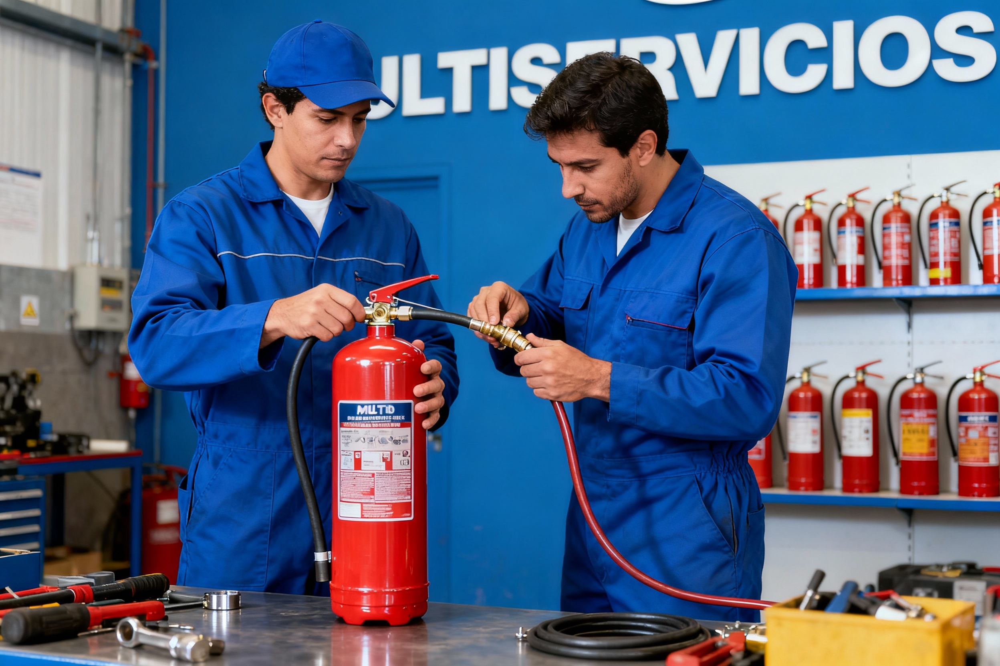
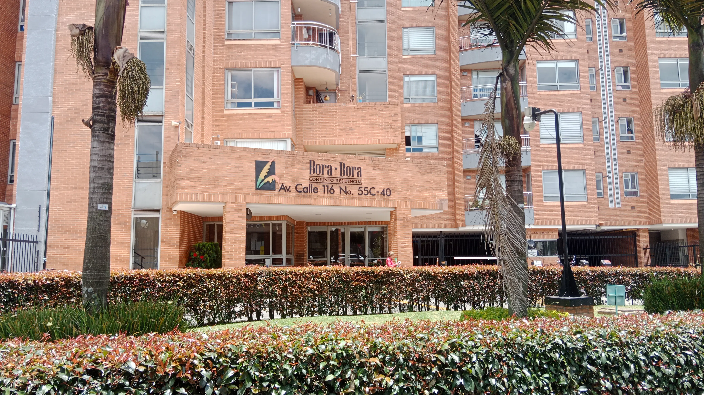

Capacitación en manipulación higiénica de alimentos
Formación para buenas prácticas, higiene y manejo seguro de alimentos.
Ver cursoSoluciones para personas, emprendedores y empresas: alimentos, saneamiento, control de plagas, tanques y extintores.
La oferta principal queda alineada con el portafolio comercial de Multiservicios.
Formación para buenas prácticas, higiene y manejo seguro de alimentos.
Ver cursoOrientación y gestión comercial para certificados médicos requeridos por manipuladores de alimentos.
SolicitarApoyo para organizar medidas básicas de saneamiento y seguimiento en negocios y empresas.
Solicitar planLimpieza, lavado y desinfección de tanques para viviendas, restaurantes, edificios y empresas.
Cotizar tanques
Plan preventivo y correctivo para control de plagas, saneamiento y seguimiento del espacio.
Solicitar planAtención para control integral de plagas en espacios residenciales, comerciales y empresariales.
Cotizar fumigación
Cotización para venta, recarga, revisión y mantenimiento de extintores según disponibilidad.
Cotizar extintoresMaterial visual integrado para mostrar saneamiento, control de plagas, extintores, capacitación y atención empresarial.
Atención residencial y empresarial.
Recarga, revisión y mantenimiento.
Procesos para cocinas y áreas de alimentos.
Atención comercial y operativa.

Identidad visual oficial.

Formación y certificación de alimentos.
Servicios para negocios de alimentos.

Atención a oficinas y equipos.

Servicios para edificios y comunidades.
La estructura prioriza WhatsApp, formularios claros y llamadas a la acción visibles en móvil.